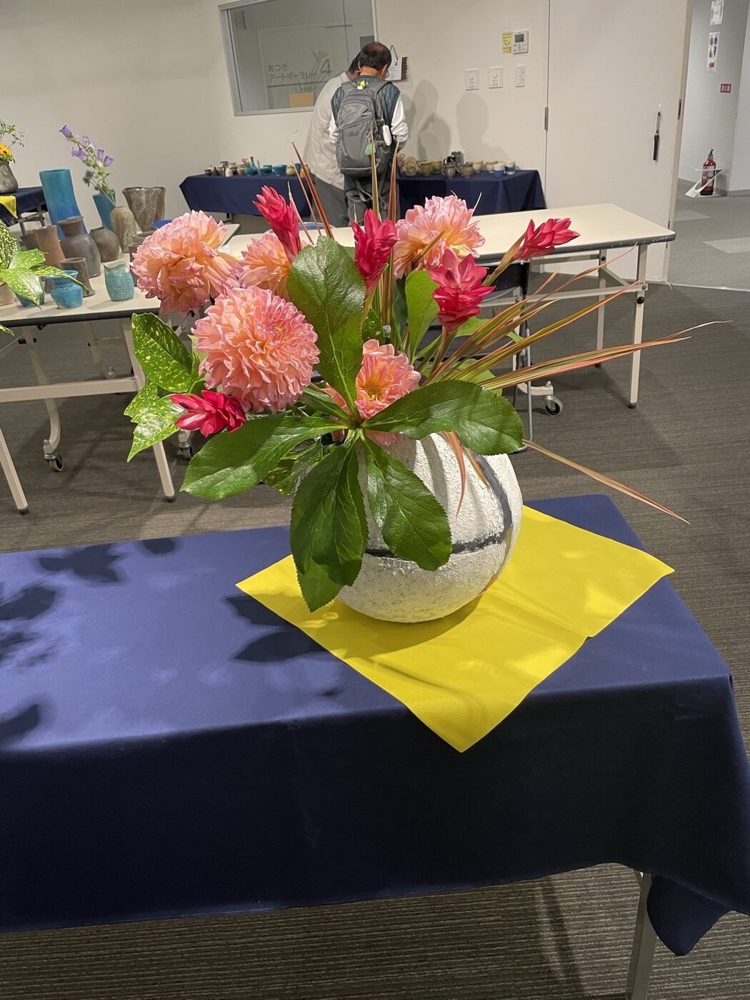
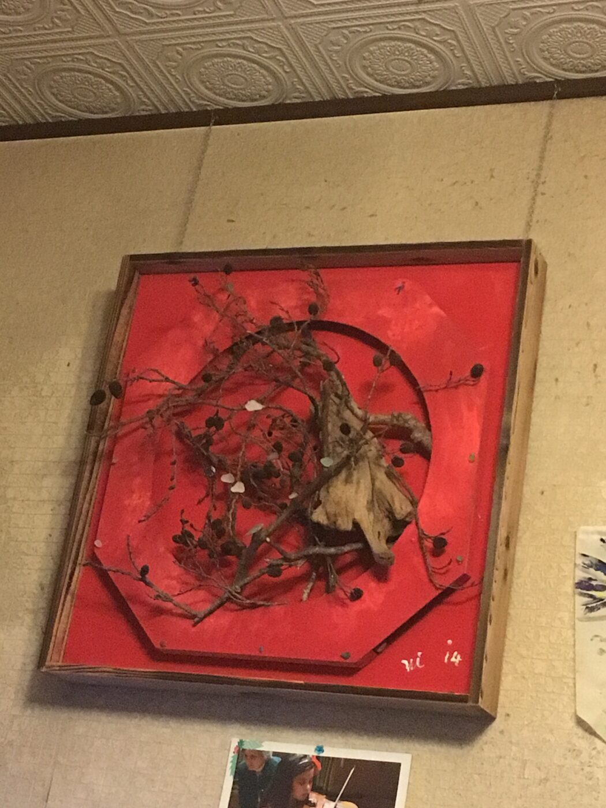

← トップに戻る
このサイトについて
[ここに作家の経歴・略歴を記載します。生年、活動の拠点、主な制作テーマの変遷など。]
本サイトは非営利・非売品での公開を目的としています。掲載作品の無断転載・商用利用はご遠慮ください。 [著作権表示・利用に関する注意書きをここに記載]
お問い合わせ: [連絡先メールアドレスなどをここに記載]
展示会場の様子

ワークショップの様子

[ここに作家の経歴・略歴を記載します。生年、活動の拠点、主な制作テーマの変遷など。]
本サイトは非営利・非売品での公開を目的としています。掲載作品の無断転載・商用利用はご遠慮ください。 [著作権表示・利用に関する注意書きをここに記載]
お問い合わせ: [連絡先メールアドレスなどをここに記載]

